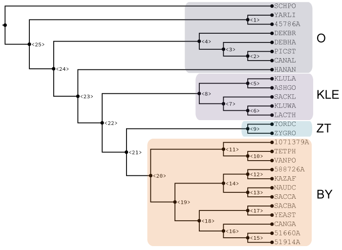
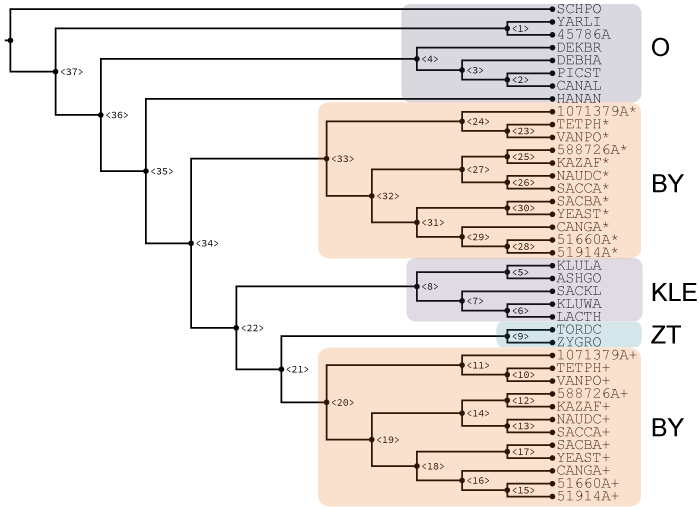

Yeast Results
Input phylogeny

H1 Node: 20
H2 Nodes: ZYGRO, TORDC, 9, 8, 22, 5, 7, 21, 20, 23, 24, HANAN
Optimal Yeast MUL-tree

Optimal H1 node: 20
Optimal H2 node: 22
Score plot
Species list
| Species name | AKA | Species ID |
|---|---|---|
| Schizosaccharomyces pombe | SCHPO | |
| Yarrowia lipolytica | YARLI | |
| Nadsonia fulvescens | 45786A | |
| Dekkera bruxellensis | DEKBR | |
| Debaryomyces hansenii | DEBHA | |
| Scheffersomyces stipitis | Pichia stipitis | PICST |
| Candida albicans | CANAL | |
| Wickerhamomyces anomalus | HANAN | |
| Kluyveromyces lactis | KLULA | |
| Ashbya gossypii | ASHGO | |
| Lachancea kluyveri | Saccharomyces kluyveri | SACKL |
| Lachancea waltii | Kluyveromyces waltii | KLUWA |
| Lachancea thermotolerans | LACTH | |
| Torulaspora delbrueckii | TORDC | |
| Zygosaccharomyces rouxii | ZYGRO | |
| Tetrapisispora blattae | 1071379A | |
| Tetrapisispora phaffii | TETPH | |
| Vanderwaltozyma polyspora | VANPO | |
| Kazachstania naganishii | 588726A | |
| Kazachstania africana | KAZAF | |
| Naumovozyma dairenensis | NAUDC | |
| Naumovozyma castellii | Saccharomyces castellii | SACCA |
| Saccharomyces bayanus | SACBA | |
| Saccharomyces cerevisiae | YEAST | |
| Candida glabrata | CANGA | |
| Nakaseomyces bacillisporus | 51600A | |
| Candida castellii | 51914A |